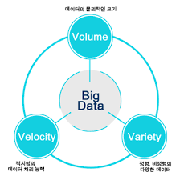

동기
이 기술을 택한 이유는 현재 4차 산업 혁명의 시대인데 실생활에서 가장 쓸 곳이 많다고 생각했기 때문입니다. 물론 4차 산업 혁명의 주요 기술들 모두 실생활에서 쓸 부분들이 많지만 빅 데이터는 실생활과 밀접하다고 생각하기 때문입니다. 예를 들어 교통량 예측을 할 때 빅 데이터 기술이 발전되기 전에 사람이 직접 지나가는 차량을 세어서 측정하고 예측을 했지만 이제는 교통정보 카메라가 지나가는 차량의 수를 수집하고 이를 정리하여 교통량 예측을 할 수 있는 것처럼 현재 생성되는 엄청난 데이터가 아닌 작은 데이터로도 필요한 정보를 찾을 수 있는 기술이라 생각해서 빅 데이터를 선택하게 되었습니다.
미래 계획
빅 데이터에 대한 자격증인 빅데이터분석기사가 있습니다. 이 자격증의 합격 기준은 필기는 과목당 40점 이상, 전과목 평균 60점이상이여야 합격이고, 실기는 100점 만점에 평균 60점이상이여야 합격입니다. 필기의 과목들로는 크게 빅데이터 분서기획, 탐색, 모델링, 결과해석이 있고, 실기에는 데이터 수집, 전처리, 모형 구축, 모형 평가가 있습니다. 이 자격증을 따기 위해서는 빅데이터에 대한 지식과, 데이터 처리 방법 등을 잘 알아야하기 때문에 빅 데이터의 특징 등을 공부하고 이제 빅 데이터를 통해 나온 결과를 해석하는 방법도 배워 나갈 것입니다. 그리고 실기에서는 R 혹은 파이썬을 사용해야 함으로 이 둘중 하나의 언어를 사용할 줄 알아야 하기 때문에 둘 중 하나의 사용법, 문법등을 공부할 것입니다.
소개
빅데이터는 데이터베이스 관리도구의 데이터 수집, 저장, 관리, 분셕 역량을 넘어서는 데이터를 말합니다. 의료 분야의 환자 데이터, 금융 분야의 거래 데이터, 교통 분야의 대중 교통 이용 데이터 등도 빅 데이터에 해당합니다. 빅 데이터의 3대 요소는 다음과 같습니다.
-
- 크기(volume)
- 일반적으로 수십 테라바이트, 또는 수십 페타바이트 이상의 크기를 가집니다. 빅데이터를 사용하면 저밀도 비정형 데이터를 대량으로 처리해야 합니다. 비정형 데이터로는 사람들의 음성 데이터, SNS상의 글들, 센서가 수집한 정보 등이 있습니다.
-
- 속도(velocity)
- 빅 데이터는 빠른 증가 속도, 소비 속도를 갖습니다. 예를 들면, 지하철 승차자 정보, SNS상의 메시지등이 있습니다.
-
- 다양성(variety)
- 데이터는 또 3가지의 종류로 나뉩니다. 정형 데이터, 비정형 데이터, 반정형 데이터.
활용처
빅 데이터의 활용처는 현재 여러 곳에서 사용되고 있고 앞으로도 계속 생겨날 것입니다. 저는 5가지 부분에서 살펴보겠습니다.
- 광고
- 보안
- 예측
- 검색의 질 향상
- 스팸 차단
우선 구글은 여러 가지의 데이터를 수집합니다. 위치 정보, 음성 데이터, 검색 기록등 여러 가지를 수집합니다. 그럼 수집한 데이터들로 무엇을 하냐 하면 예를 들어 구글에 '라면'을 검색했을 때 구글은 그 검색 기록을 수집하고 나중에 사용자에게 라면과 관련된 광고나 음식점, 유튜브라면 라면과 관련된 영상을 추천함으로써 광고 효과를 더 높힐 수 있습니다. 아마존이나 쿠팡 같은 기업도 빅데이터를 활용합니다. 아마존이나 쿠팡에서 사용자가 물건을 구입하고, 만약 그 물건을 재구매 했을 때 기업은 사용자의 구매 기록을 수집해서 언제 어떠한 물건을 구입했고, 언제 재구매 하였는지 등의 정보를 가지고 재구매할 시기이거나 전에 이 물건을 비슷한 시기에 구매를 했다면 물건을 사용자에게 메인 화면에 혹은 푸쉬 알림으로 사용자에게 추천을 함으로써 광고 효과를 높힐 수 있습니다.
우선 일상 생활에서의 보안은 CCTV가 있습니다. CCTV는 고정형 보안시설로 보고 있는 방향만 영상 데이터로 저장을 합니다. 저장을 하면서 축적된 데이터중에 대부분의 사람들이 하는 행동을 분석하고 그 외에 이상한 행동을 하는 사람들을 찾아낼 수 있습니다. 사이버 공간에서도 이와 비슷한 역할을 할 수 있습니다. 한 서버에서 외부 연결과 통신을 하는 포트가 1,2번이라고 할 때, 정상적인 연결이라면 1,2번 포트를 주로 이용하고, 이 연결 시도는 로그로 남게 됩니다. 만약, 침입자가 정상적인 포트가 아닌 다른 포트로 접근을 시도한다면, 그동안 축전된 데이터와 비교하여 이것은 정상적인 접근이 아니라고 판단하여 사용자 혹은 관리자에게 이를 알리게 됩니다.
예측이라 말로 실생활에서 적용하기 제일 쉽다고 생각합니다. 일단 교통량 예측을 할 때에는 옛날에는 사람이 직접 지나가는 도로에서 지나가는 차량을 직접 세고 각각의 시간에 따라 지나간 차량의 수를 특정해서 이를 통해 교통량 예측을 했지만 지금은 CCTV같은 장비 혹은 도로변에 카메라를 설치하여 지나가는 차량의 수를 측정하고 이를 데이터화를 한다음 각각의 시간에 따라 지나가는 차량의 수를 그래프 혹은 알아 보기 쉬운 형태로 이를 정리해서 보여줄 수 있습니다. 그러면 필요한 시간대에 교통량을 쉽게 예측할 수 있습니다. 교통량 예측말고 주식 예측도 비슷하게 실행될 수 있습니다. '나스닥'을 예로 들면 그전까지의 주식 변동을 데이터화한 다음 실제로는 여러가지 세계의 사건과 사람의 심리까지 모두 데이터화할 수 없지만 그동안의 주식 데이터를 토대로 앞으로의 주식 상황을 예측할 수 있습니다. 교통사고 예측도 가능합니다. 교통사고가 일어나는 원인은 엄청 많지만 날씨가 안좋을수록, 지나다니는 사람이 많을수록, 운전하는 방식이 난폭할 수록 등등 해서 교통사고가 일어날 확률이 높아집니다. 우선 기상청의 날씨 정보, 인구, 교통 문화 지수, 시민 제보 데이터 등의 데이터를 수집하고, 분석해서 이를 토대로 교통사고가 많이 일어나는 날씨, 시간대, 사고 위험 지수를 예측하여 교통 사고가 날 확률을 미리 예측하여 대비할 수 있습니다. 그 외에 게임 서버를 예로 들자면 게임을 즐기는 게이머들은 주로 퇴근후 그리고 주말에 게임을 즐기는데 시간대에 맞춰 이벤트 혹은 추가 아이템을 주는 것이 게임을 좀 더 하도록 붙잡는 역할을 합니다. 각 유저들의 접속 시간들을 수집해서 유저들이 가장 많이 접속하는 혹은 접속할 가능성이 높은 시간대를 예측해서 그에 맞춰서 이벤트를 진행하거나 아이템을 우편으로 넣어줄 수 있게 됩니다.
네이버, 구글과 같은 검색 엔진은 무수한 글, 이미지, 영상 데이터 등을 검색만 하면 사용자에게 검색한 내용들을 보여줍니다. 그렇다면 사람들은 자신이 원하는 정보일 경우에 클릭을 해서 검색 엔진이 결과라고 보여준 것들중 하나를 확인해 보는데 검색 엔진을 가진 기업들은 사용자가 검색한 내용과 검색 결과 중 클릭한 문서 혹은 이미지에 대한 데이터를 수집하고 이를 분석해서 A라는 단어를 검색 했을 때 B, C는 많이 클릭을 했는데 E는 많이 검색이 안되었다면, B,C는 첫번 째 페이지로 노출을 시켜주고 E는 점차 뒤에 페이지로 넘어가게 됨으로써 검색 결과의 질을 향상시킬 수 있습니다.
현재 대부분의 이메일을 관리하는 기업들은 대부분 스팸 메일을 차단하는 기능을 가지고 있습니다. 스팸 메일이란 일반 우편, 전자 우편, 게시판, 문자메시지, 전화, 인터넷 포털의 쪽지 기능 등을 이용해 불특정 다수에게 보내는 광고성 편지(메일) 혹은 메시지입니다. 그렇다면 스팸 메일과 정상 메일의 차이는 어떻게 구별하는 걸까요? 각 기업들은 필터링 기능을 사용하는데 이 필터링에 들어가는 스팸 문구들은 사용자들이 스팸메일로 신고한 혹은 사용자가 직접 등록한 스팸 문구를 기준으로 특정 단어 혹은 이메일 주소가 있으면 차단하는 식으로 메일들을 필터링합니다. 사용자가 신고한 스팸 메일들과 사용자가 등록한 스팸 문구를 수집해서 이를 데이터화 한다음 계속해서 들어오는 스팸 신고들의 내용도 계속 추가하면서 이용자들에게 보내지는 메일들을 한번 필터링해서 스팸 메일을 막을 수 있습니다.
작동 방법
작동 방법이라고 써놨지만 거의 빅데이터를 어떻게 해야 잘 사용할 수 있는 지에 대한 내용입니다. 우선 여러 소스 및 종류의 데이터를 통합해야 합니다. 예를 들어 A라는 물건에 대한 의견을 수집해서 데이터화를 하려고 하면 음성 데이터와 영상 데이터는 각각 처리 방법이 다릅니다. 글로 작성된 의견이라면 각 국의 언어를 하나로 맟춰야 하고 글의 형식도 일정하지 않기 때문에 이것도 하나의 형식으로 통합을 해야합니다. 두번째로는 저장공간이 필요합니다. 저장 공간은 하드 디스크나 클라우드 등 상관 없습니다. 다만 저장되어야 하는 데이터의 양과 수집된 데이터를 모두 저장 혹은 분산 저장이 되어야 할 크기를 가져야 합니다. 세번째로는 이 수집하고 통합한 데이터를 분석하고 처리를 할 때 그 가치가 발휘됩니다. 그냥 수집만 한 정보는 그냥 데이터일 뿐이고 저장 공간만을 차지하는 데이터 쪼가리입니다. 하지만 이 데이터를 토대로 얻어야 하는 정보를 찾아내거나 새로운 가치를 생성한다면 이는 더이상 데이터 쪼가리가 아닌 중요한 정보가 됩니다.
문제점
빅 데이터의 가장 큰 문제점은 개인정보 침해가 있습니다. 빅 데이터가 사람들로 부터 데이터를 수집해서 이를 분석하고 분석한 것에서 유용한 결론을 찾아 사용하는 기술인데, 현재 이 개인정보를 구매하는 것은 뉴스에서 심심찬게 찾을 수 있습니다. 개인정보를 구입한 사람들은 구입한 개인정보를 통해 선거 때라면 선거유세를 위해, 기업은 홍보 등의 역할을 하기 위해 사용합니다. 이렇게 데이터가 급증하고 지금 이 순간에도 엄청난 량의 데이터가 생겨나고 있는데 이를 전문적으로 관리할 인력도 없습니다. 빅 데이터를 관리 혹은 분석하는 기업이 만약에 파산 혹은 해킹을 당하면 기업이 갖고 있던 데이터들은 어디로 가는지 알 수 없게 될 수 있습니다. 그리고 빅 데이터는 많은 데이터를 모으는게 중요하기 때문에 많은 사람들이 개인정보 사용 동의가 필요합니다. 그래서 기업들은 모두 개인정보 사용 동의를 사람들에게 요청하는데 대기업이면 대기업일수록 동의한 사람들이 많으므로 데이터 격차는 줄어들지 않습니다. 이게 왜 문제가 되면 후발 주자들은 대기업이나 선두 주자가 가지고 있는 데이터(개인정보를 통해 얻은 정보)를 가지고 있지 않기 때문에 데이터 독점과 비슷한 문제가 생길 수 있습니다. 또한 비식별화한 개인정보를 수집한다고 동의를 요청하는 경우도 있는데 비식별화한 개인정보라고 해도 여러 기업에서 다 같은 방식으로 비식별화하는 것이 아니기 때문에 여러 기업에서 개인정보를 구입 혹은 획득하면 재식별화는 어렵지 않습니다. 더군다나 한국은 주민번호가 있기 때문에 재식별화하는 데에 무리가 없습니다. 현재까지는 개인 정보 보호에 대한 법적 조항이나 보호 의무가 비교적 약해 현재로서는 개인정보 요청을 피하는 수밖에 없습니다.